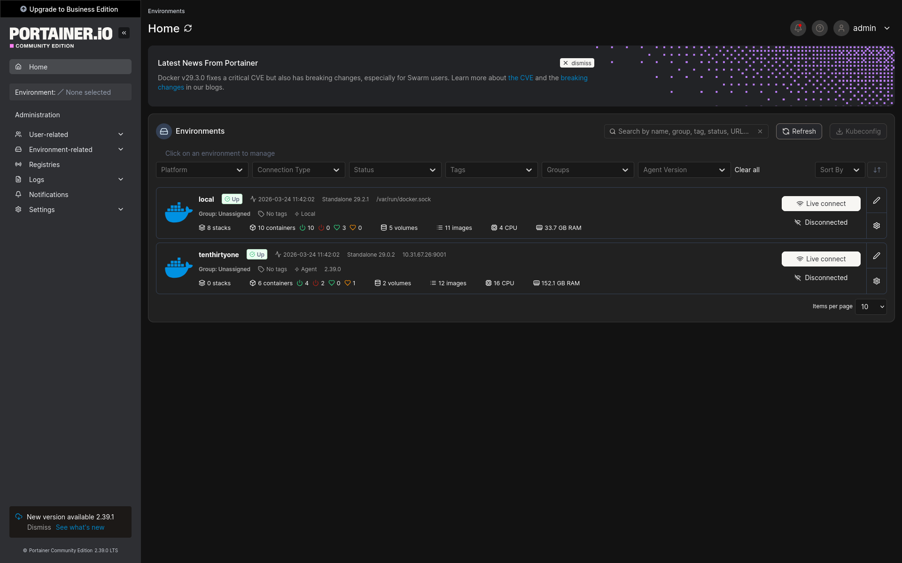

This project uses Portainer to manage Docker containers through a clean web dashboard. I connected it to my Docker environment, deployed services, reviewed container settings, checked logs, and practiced troubleshooting running applications. It helped me build stronger container management and server operations skills.